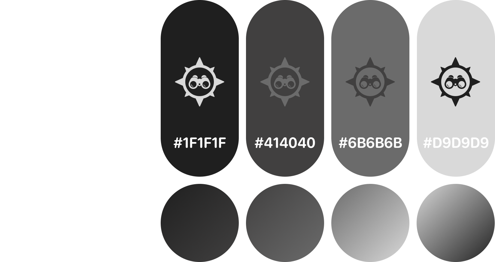

Rovara — Travel App Concept
A travel planning and discovery app designed to make exploring new places more intuitive, visual, and personalised.

Problem
Planning a trip often involves jumping between multiple apps to search for places, organise ideas, and navigate during the journey. This creates friction and makes the experience feel fragmented.
Many travel apps also overload users with information, making it harder to quickly decide where to go or what to do next.
Process
I started by sketching low-fidelity wireframes to define the core structure of the app and prioritise key features. The focus was on clarity, hierarchy, and reducing cognitive load.
From there, I explored different layouts for navigation, map interaction, and content cards before moving into high-fidelity designs.

Visual Identity

Design
The final design uses a dark theme to create a more immersive and travel-focused experience. Visual content plays a central role, helping users quickly understand destinations through imagery rather than text-heavy layouts.
Key features include:
- A personalised home screen with recommended destinations
- An interactive map view for real-time exploration
- Detailed location pages with images, highlights, and quick insights
- A bottom navigation for easy one-handed use
Result
The final concept brings discovery, planning, and navigation into a single cohesive experience. It reduces friction by allowing users to move seamlessly from inspiration to action.
This project helped me explore how visual hierarchy, layout, and interaction design can improve decision-making in travel apps.